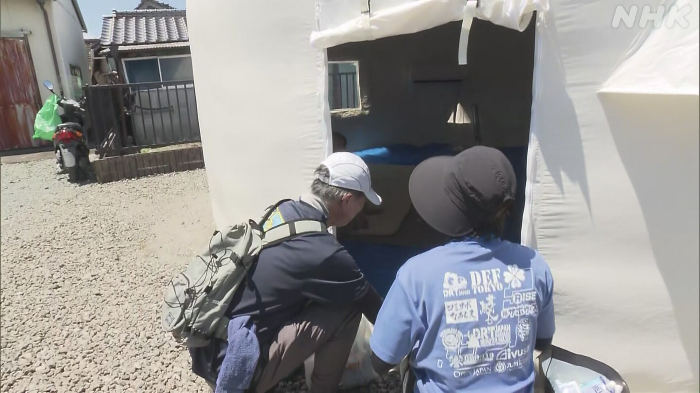

最新ニュース
1️⃣ 台風13号 沖縄県と奄美地方は風と雨に気をつけて
大きくて強い台風13号は、沖縄県の大東島地方に近い所を西に進んでいます。
沖縄県と鹿児島県の奄美地方では、風が強くなっています。
家が倒れるぐらいのとても強い風が吹くかもしれません。海の波も高くなっています。
沖縄県と鹿児島県の奄美地方などでは、たくさん雨が降りそうです。
気象庁は、強い風や高い波に気をつけるように言っています。山が崩れたり、低い所に水が入ったりするかもしれません。気をつけてください。
2️⃣ 熊本県氷川町 ボランティアが避難している人の健康をチェック

先週の大きい地震で、熊本県では、6700人ぐらいが今も避難しています。
震度7だった氷川町では、1200以上の家が壊れました。車の中やテントに避難している人もいます。
看護師などのボランティアたちは、車の中などに避難している人が元気かどうか、健康をチェックしています。
避難している女性は「近所の家で風呂に入っていますが、毎日は入ることができません」と話していました。
ボランティアは、壊れた家にある財布や携帯電話などをさがす手伝いもしています。
ボランティアの人は「暑くて水道を使うこともできません。今度の災害は大変です」と話していました。
3️⃣ 広島に原爆が落とされてから81年 平和を祈る
8月6日、広島に原爆が落とされてから81年になりました。
広島市の公園で、5万人ぐらいが出席して、平和を祈る式がありました。原爆が落とされた午前8時15分に、亡くなった人たちのためにみんなで祈りました。
広島市の松井市長は「たくさんの国が核兵器の強い力に頼っていて、核兵器のない世界にすることが難しくなっています。私たちは早く核兵器がなくなることを願っています」と言いました。
広島市の小学生2人は「原爆の被害を受けた人から話を聞くことができるのは、私たちぐらいの若い人が最後です。原爆のことを知って、平和のために行動することが大切です」と言いました。
4️⃣ 夏の高校野球 甲子園で初めて女性が審判をした
甲子園球場で高校生の野球の1番を決める大会が始まりました。
この大会で、初めてのことが行われています。
5日の開会式では、愛媛県の高校生2人が、大会に出る学校の紹介などを、初めて手話で伝えました。
手話は、聞こえない人や聞こえにくい人などが手を動かして会話をします。
そして、この大会では、初めて女性が審判をします。女性の審判は全部で5人です。
5日の試合では、埼玉県の森田真紀さんが審判をしました。体を大きく使って、アウトやセーフなどを決めていました。
森田さんは「緊張しましたが、皆さんに助けてもらって無事に終わりました」と話していました。
- 〜ところ
- 〜ている / 〜でいる
- 〜くらい / 〜ぐらい
- 〜かもしれない / 〜かもしれません
- 〜ても / 〜でも
- 〜など
- 〜そうだ
- 〜ように
- 〜たり〜たりする
- 〜てください / 〜でください
- 〜以上
- 〜中
- 〜こと
- 〜ことができる
- 〜や〜など
- 〜になる
- 〜てから
- 〜から
- 〜がある / 〜がいる
- 〜ため
- 〜ため(に)
- 〜にくい
- 〜てもらう / 〜でもらう
vebaev.github.io
Generated: 2026-08-06 12:57:42 UTC